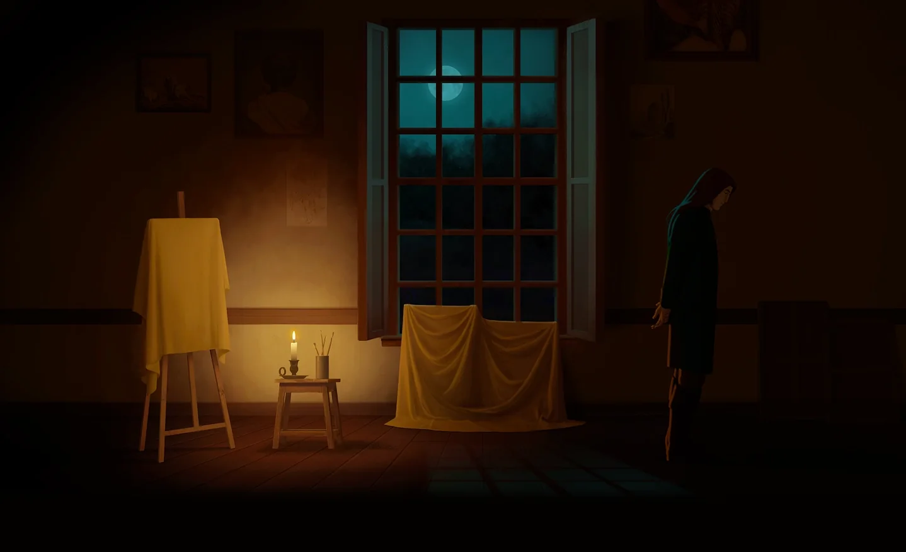
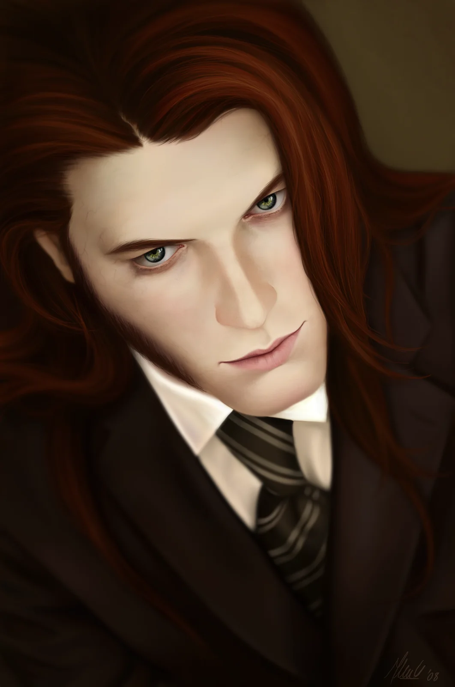
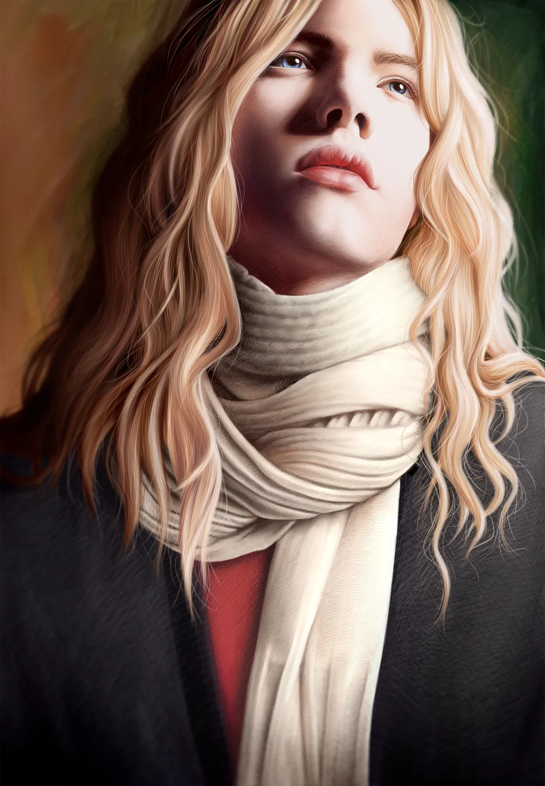
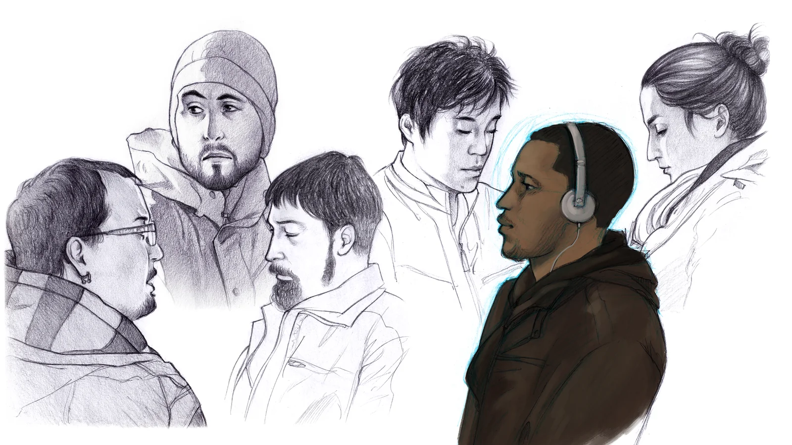
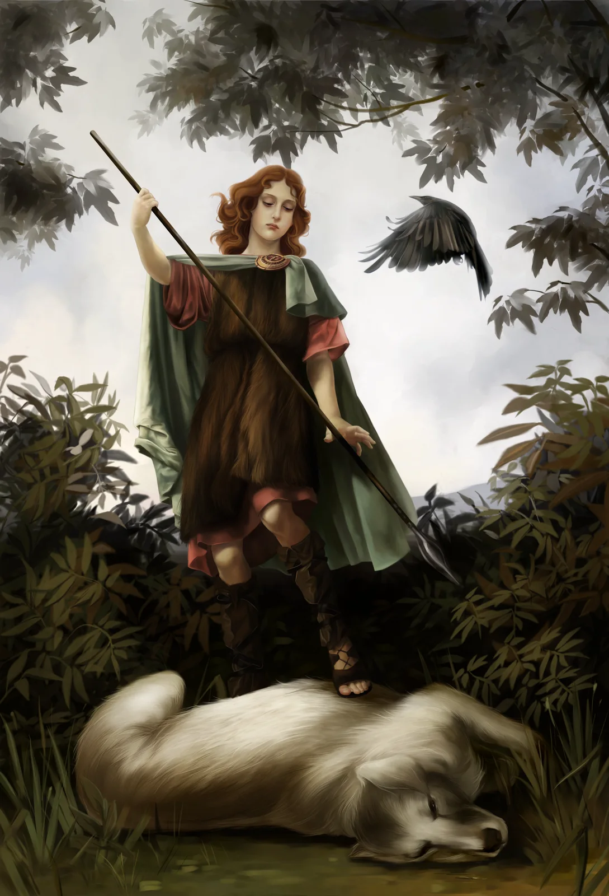
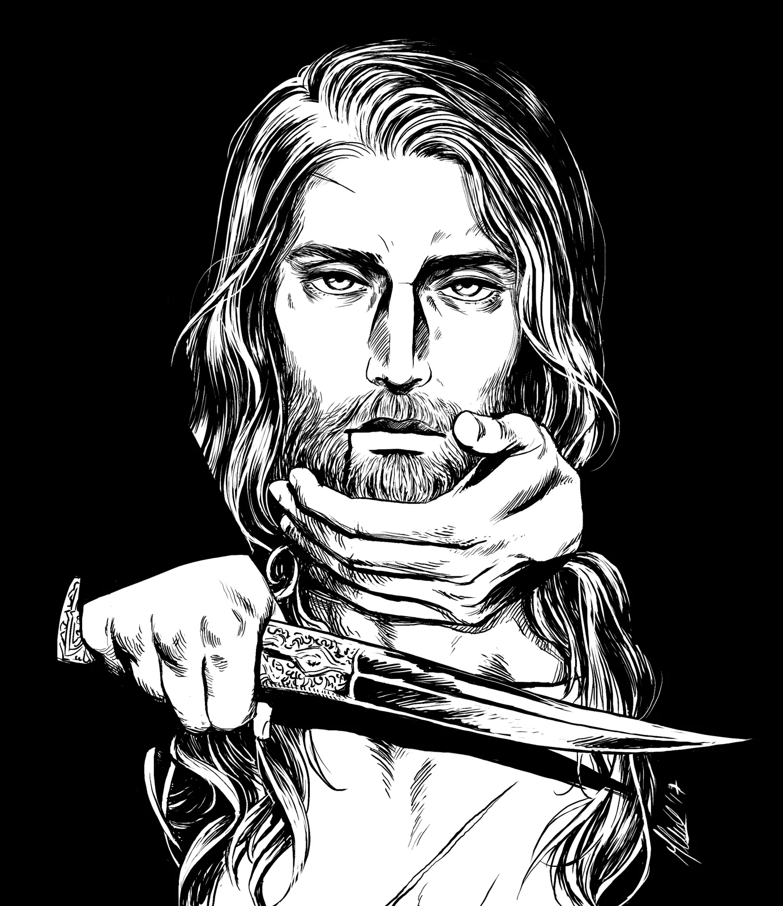
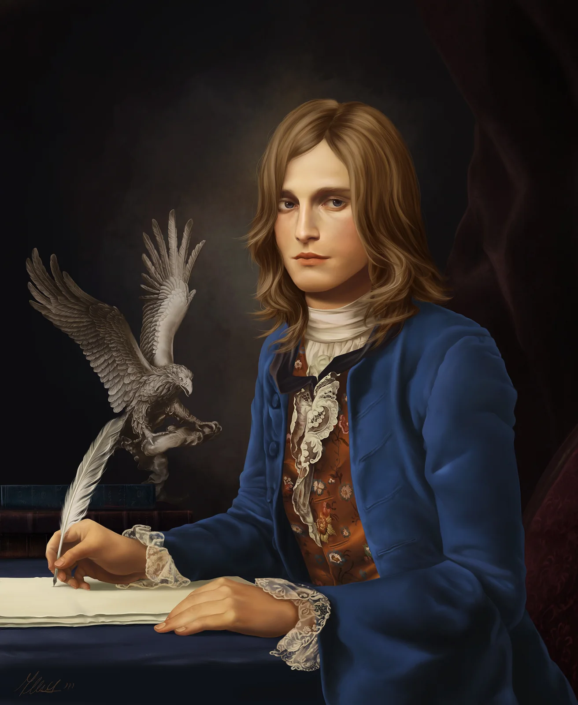
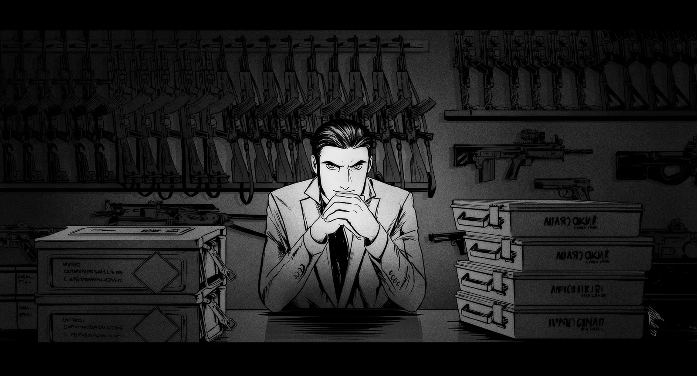

五人の不死者。八つの世紀。罪悪感と信仰、そして介入しないことを選ぶ代償を描く、文学的ビジュアルノベル。
『Una Sangre』は、2Dアニメーション業界で15年の経験を持つ一人の作り手（Netflix、ディズニー・テレビジョン、Mercury Filmworks）が、Studio Minaz名義で執筆・描画・開発しています。
すべての文は、ゆっくり読まれることを前提に書かれています。選択肢は少なく、そしてどれも軽くはありません。












ベネズエラ系カナダ人のアーティスト、May Yeoshenです。アニメーション業界で15年以上、アートディレクター、背景画家、キャラクターデザイナーとして、ディズニー・テレビジョン、Netflix、ニコロデオン、マテル、ワーナー・ブラザース、9 Storyなどの作品に携わってきました。
現在は、20年以上あたため続けてきた物語『Una Sangre』を、執筆し、描き、開発しています。
アートディレクター／シニアアーティスト
背景画家、ワーナー・ブラザース『Get Jiro!』（2025）
カラーデザイナー、『Fangbone』デモ（2014）
背景画家、ディズニー・テレビジョン『Fish Hooks』シーズン1、『Shred Force』デモ、『Team Hot Wheels: The Origin of Awesome』（2010 – 2012）
アートディレクター、Big Jump Entertainment『Polly Can Do』（2024）
アートディレクター、『Polly's Big Day Out / Little Book of Big Firsts』（2023 – 2024）。未就学児向けシリーズのビジュアルアイデンティティ（キャラクター、ロケーション、小道具）をすべて確立。
シニア背景画家、ニコロデオン『The Loud House』（2022）
背景画家、Netflix『Inside Job』（2021 – 2022）
背景スーパーバイザー、ニコロデオン『The Loud House』（2018 – 2021）。背景チームを率い、毎週の納期の中で作品のスタイルの一貫性を維持。
背景画家、ニコロデオン『Bubble Guppies』（2019）
リードデザイナー、マテル『Wellie Wishers』シーズン2（2017 – 2018）
背景スーパーバイザー、ニコロデオン『Pinky Malinky』シーズン1（2016 – 2017）
カラーデザイナー、Teletoon『The Bagel and Becky Show』（2015 – 2016）
背景リヴィジョニスト、ニコロデオン『The Loud House』シーズン1（2015 – 2016）
カラーデザイナー、『The Day My Butt Went Psycho』およびニコロデオンのデモ（2014）
背景画家、9 Story『Camp Lakebottom』シーズン1（2012 – 2013）
児童書イラストレーター、Epic Story Media『Piper's Pony Tales』（2023）
キャラクターデザイン・スーパーバイザー、Sphere Animation、TVO『Riley Rocket』（2022）
キャラクターデザイナー、Netflix、短編『The Empathy Project』（2021）
児童書イラストレーター、Magelica Inc.、ルイーズ・クーリー著『Magelica』（2014）
背景画家、9 Story Media Group『Wild Kratts』シーズン1～3（2009 – 2014）
背景画家、Big Jump Productions『Bounty Hunters』『Benjamin Bear』シーズン4（2009 – 2013）
トラディショナル・アニメーション、アルゴンキン・カレッジ（オタワ）。優等で卒業（2006 – 2009）
コンセプトアート、Visual Arts Passage（オンライン）（2019 – 2020）
学生時代の短編『Charged』：イギリスのスタンフォード児童映画祭で受賞、ヨークトン映画祭で上映。
Ballistic Publishing の『Painter』『Exotique 4』『Exposé 10』に作品が選出。
Corel Painter 公式マガジンのチュートリアルを執筆、第16号の表紙を担当。Corel Painter IX.5 キャンペーンの受賞作品。
バス通勤中に出会った人々のスケッチ集『98/116』の著者。
デジタルアート個展、プエルト・オルダス商工会議所（2005）。
Toon Boom Harmony、Photoshop、Clip Studio Paint、Corel Painter、Premiere、Ren'Py
スペイン語、英語、日本語（初級）